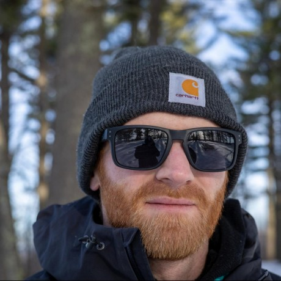

I’m an experienced backend engineer, passionate about correct code, privacy, and security. I love wearing multiple hats, which is why so much of my experience is from early-stage startups. I value working in many different languages and technologies, and I care most of all about delivering high-quality, pragmatic outcomes.
Dan Fithian
SimSpace Corporation
Senior Software Engineer, Backend Lead | February 2020 - December 2021
- Led feature design as backend lead. Two of my biggest contributions were in deployment automation and observability in virtualized networks, and scaling botnet traffic generation with an open API to leverage hundreds of hosts per network.
- Owned infrastructure projects for a team of 50+ engineers. I contributed most to CI infrastructure and observability, and developed and maintained an automated documentation site.
TVision
Senior Software Engineer, Team Lead | December 2016 - February 2020
- Led a scrum team and performed both team lead and product owner responsibilities. This included design and development of device configuration, data ingestion, and customer report delivery as well as scaling for 5x panel growth.
- Managed infrastructure monitoring by integrating to Datadog, Pagerduty, and implementing an on-call rotation in addition to maintaining our build system and creating internal productivity tools for developers.
- Led team development by promoting FP concepts and organizing weekly tech talks.
SimSpace Corporation
Software Engineer | October 2015 - December 2016
- Wrote network traffic generation automating hundreds of hosts during training simulations.
- Developed and maintained role-based authentication and authorization services.
Paytronix Systems
Software Engineer | October 2013 - October 2015
- Launched new POS integrations.
- Contributed to service and UI components in legacy codebase.